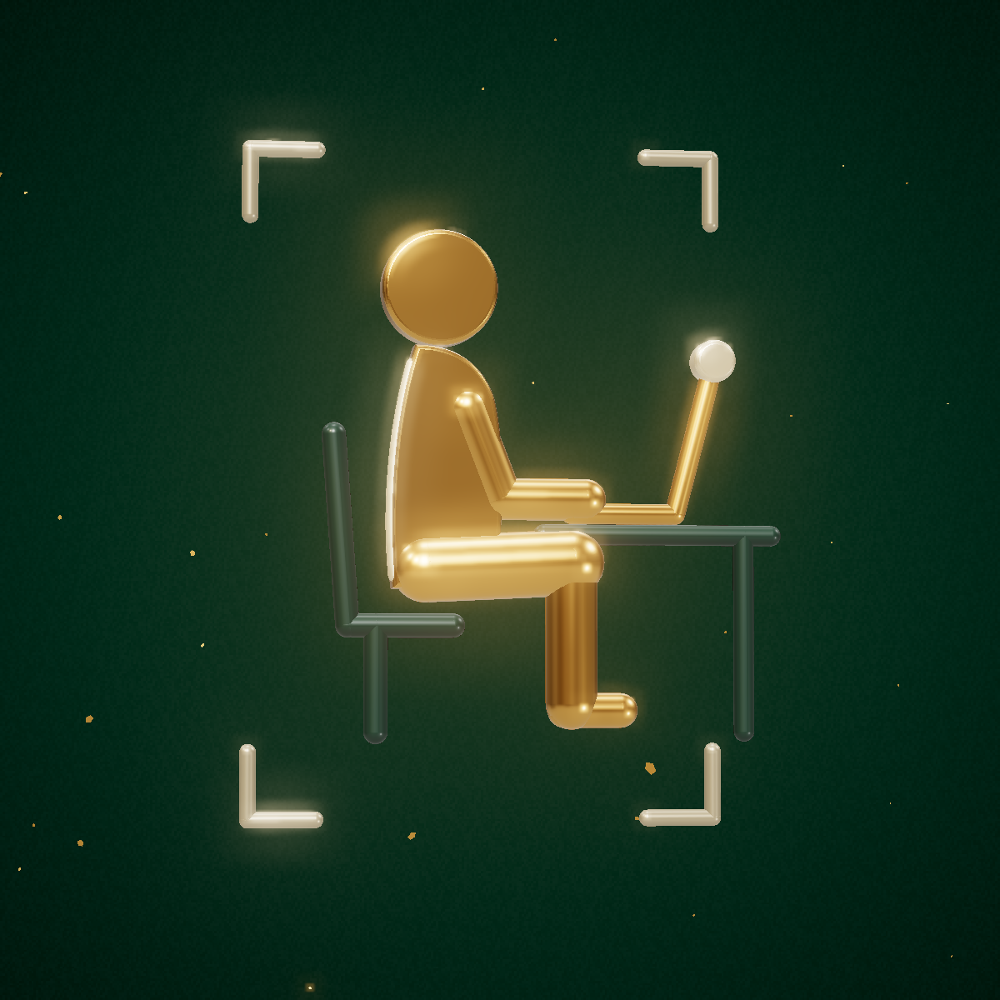
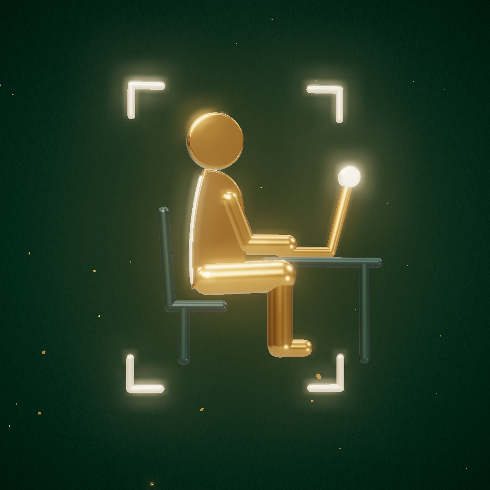
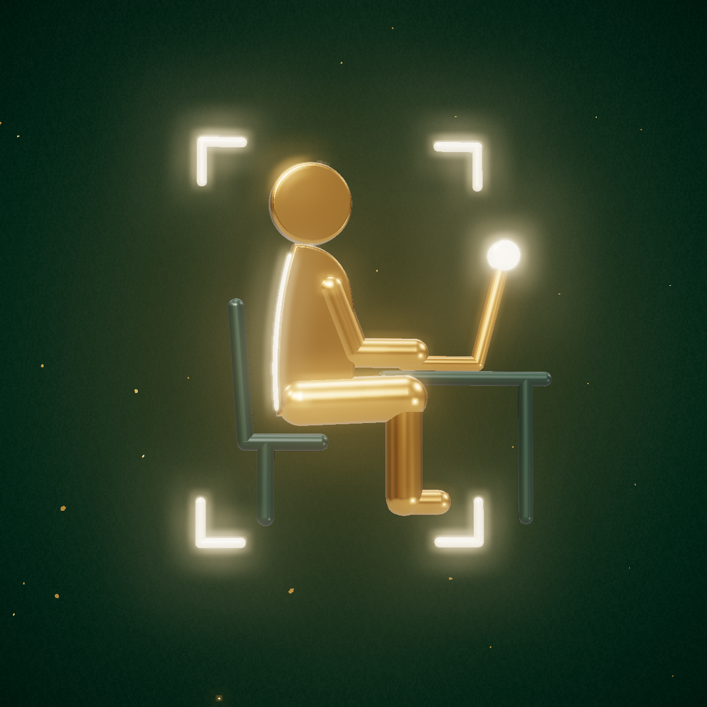
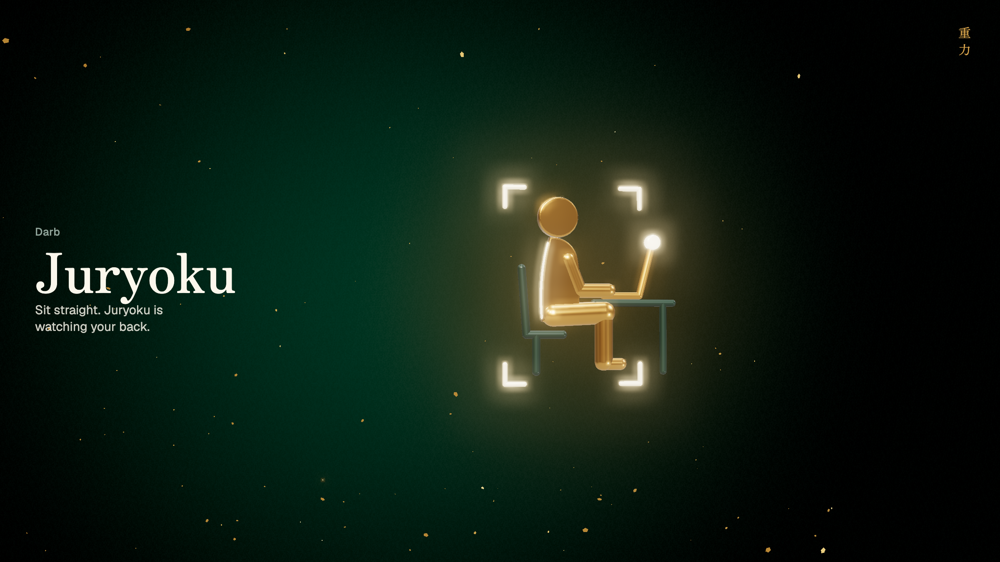
重力
Darb
Juryoku is a Darb product, so it wears Darb's colours: night and forest for surfaces, Darb gold for the outline of your best posture, ivory for text. Gold marks only what matters: you, and your spine when it is straight. Bad posture is never red, just dimmer gold.
One 3D render, cut for every surface: the installed web app, Android's adaptive mask, the iOS home screen, a future desktop app, and the browser tab.
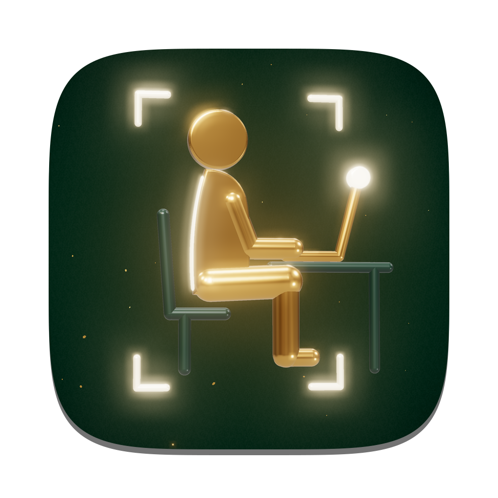
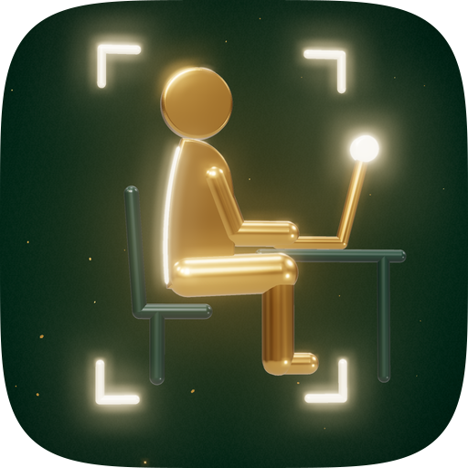
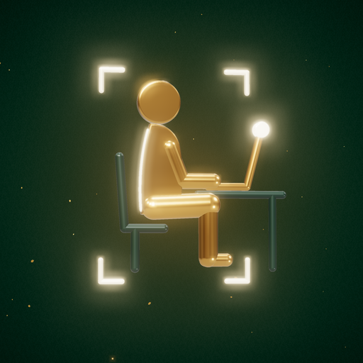
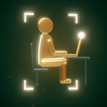
You, sitting straight at your laptop, in the camera’s frame, with your spine lit in gold. That is the whole app: your webcam keeps an eye on your back, and good posture shows up as light.
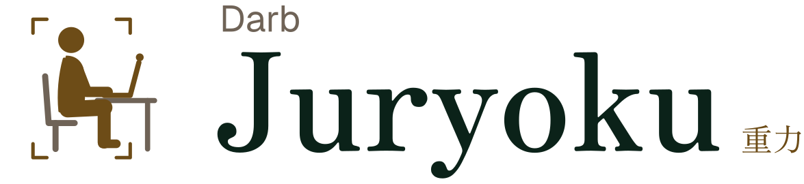
The frame starts wide and dim while the camera looks for you. It tightens, focuses, and locks on, and your spine lights up.



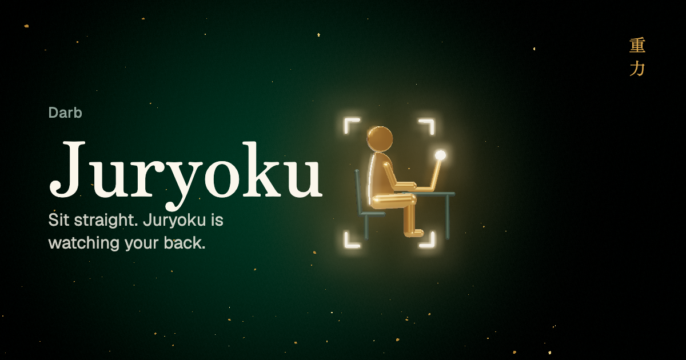